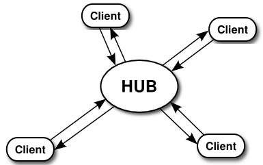
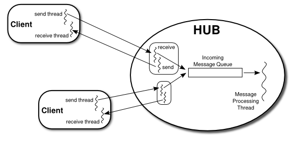

Network Programming Example:A Networked Game Framework
This section presents several programs that use networking and threads. The common problem in each application is to support network communication between several programs running on different computers. A typical example of such an application is a networked game with two or more players, but the same problem can come up in less frivolous applications as well. The first part of this section describes a framework that can be used for a variety of such applications, and the rest of the section discusses three specific applications that use that framework. This is a fairly complex example, probably the most complex in this book. Understanding it is not essential for a basic understanding of networking.
This section was inspired by a pair of students, Alexander Kittelberger and Kieran Koehnlein, who wanted to write a networked poker game as a final project in a class that I was teaching. I helped them with the network part of the project by writing a basic framework to support communication between the players. Since the application illustrates a variety of important ideas, I decided to include a somewhat more advanced and general version of that framework in this book. The final example in this section is a networked poker game.
The Netgame Framework
One can imagine playing many different games over the network. As far as the network goes, all of those games have at least one thing in common: There has to be some way for actions taken by one player to be communicated over the network to other players. It makes good programming sense to make that capability available in a reusable common core that can be used in many different games. I have written such a core; it is defined by several classes in the package netgame.common.
We have not done much with packages in this book, aside from using built-in classes. Packages were introduced in Subsection 2.6.6, but we have stuck to the "default package" in our programming examples. In practice, however, packages are used in all but the simplest programming projects to divide the code into groups of related classes. It makes particularly good sense to define a reusable framework in a package that can be included as a unit in a variety of projects.
Integrated development environments such as Eclipse make it very easy to use packages: To use the netgame package in a project in an IDE, simply copy-and-paste the entire netgame directory into the project. Of course, since netgames use JavaFX, you need to use an Eclipse project configured to support JavaFX, as discussed in Section 2.6.
If you work on the command line, you should be in a working directory that includes the netgame directory as a subdirectory. You need to add JavaFX options to the javac and java commands. Let's say that you've defined jfxc and jfx commands that are equivalent to the javac and java with JavaFX options included, as discussed in Subsection 2.6.7. Then, to compile all the java files in the package netgame.common, for example, you can use the following command in MacOS or Linux:
$ jfxc netgame/common/*.javaFor Windows, you should use backslashes instead of forward slashes:
$ jfxc netgame\common\*.javaYou will need similar commands to compile the source code for the examples in this section, which are defined in other subpackages of netgame.
To run a main program that is defined in a package, you should again be in a directory that contains the package as a subdirectory, and you should use the full name of the class that you want to run. For example, the ChatRoomWindow class, discussed later in this section, is defined in the package netgame.chat, so you would run it with the command
$ jfx netgame.chat.ChatRoomWindowThe applications discussed in this section are examples of distributed computing, since they involve several computers communicating over a network. Like the example in Subsection 12.4.5, they use a central "server," or "master," to which a number of "clients" will connect. All communication goes through the server; a client cannot send messages directly to another client. In this section, I will refer to the server as a hub, in the sense of "communications hub":

The main things that you need to understand are that: The hub must be running before any clients are started. Clients connect to the hub and can send messages to the hub. The hub processes all messages from clients sequentially, in the order in which they are received. The processing can result in the hub sending messages out to one or more clients. Each client is identified by a unique ID number. This is a framework that can be used in a variety of applications, and the messages and processing will be defined by the particular application. Here are some of the details...
In Subsection 12.4.5, messages were sent back and forth between the server and the client in a definite, predetermined sequence. Communication between the server and a client was actually communication between one thread running on the server and another thread running on the client. For the netgame framework, however, I want to allow for asynchronous communication, in which it is not possible to wait for messages to arrive in a predictable sequence. To make this possible a netgame client will use two threads for communication, one for sending messages to the hub and one for receiving messages from the hub. Similarly, the netgame hub will use two threads for communicating with each client.
The hub is generally connected to many clients and can receive messages from any of those clients at any time. The hub will have to process each message in some way. To organize this processing, the hub uses a single thread to process all incoming messages. When a communication thread receives a message from a client, it simply drops that message into a queue of incoming messages. There is only one such queue, which is used for messages from all clients. The message processing thread runs in a loop in which it removes a message from the queue, processes it, removes another message from the queue, processes it, and so on. The queue itself is implemented as an object of type LinkedBlockingQueue (see Subsection 12.3.3).

There is one more thread in the hub, not shown in the illustration. This final thread creates a ServerSocket and uses it to listen for connection requests from clients. Each time it accepts a connection request, it hands off the client socket to another object, defined by the nested class ConnectionToClient, which will handle communication with that client. Each connected client is identified by an ID number. ID numbers 1, 2, 3, ... are assigned to clients as they connect. Since clients can also disconnect, the clients connected at any give time might not have consecutive IDs. A variable of type TreeMap<Integer,ConnectionToClient> associates the ID numbers of connected clients with the objects that handle their connections.
The messages that are sent and received are objects. The I/O streams that are used for reading and writing objects are of type ObjectInputStream and ObjectOutputStream. (See Subsection 11.1.6.) The output stream of a socket is wrapped in an ObjectOutputStream to make it possible to transmit objects through that socket. The socket's input stream is wrapped in an ObjectInputStream to make it possible to receive objects. Remember that the objects that are used with such streams must implement the interface java.io.Serializable.
The netgame Hub class is defined in the file Hub.java, in the package netgame.common. The port on which the server socket will listen must be specified as a parameter to the Hub constructor. The Hub class defines a method
protected void messageReceived(int playerID, Object message)When a message from some client arrives at the front of the queue of messages, the message-processing thread removes it from the queue and calls this method. This is the point at which the message from the client is actually processed.
The first parameter, playerID, is the ID number of the client from whom the message was received, and the second parameter is the message itself. In the Hub class, this method will simply forward a copy of the message to every connected client. This defines the default processing for incoming messages to the hub. To forward the message, it wraps both the playerID and the message in an object of type ForwardedMessage (defined in the file ForwardedMessage.java, in the package netgame.common). In a simple application such as the chat room discussed in the next subsection, this default processing might be exactly what is needed by the application. For most applications, however, it will be necessary to define a subclass of Hub and redefine the messageReceived() method to do more complicated message processing. There are several other methods in the Hub class that you might want to redefine in a subclass, including
- protected void playerConnected(int playerID) — This method is called each time a player connects to the hub. The parameter playerID is the ID number of the newly connected player. In the Hub class, this method does nothing. (The hub has already sent a StatusMessage to every client to inform them about the new player; playerConnected() is for any additional actions that a subclass of Hub might want to take.) Note that the complete list of ID numbers for currently connected players can be obtained by calling getPlayerList().
- protected void playerDisconnected(int playerID) — This is called each time a player disconnects from the hub (after the hub sends a StatusMessage to the clients). The parameter tells which player has just disconnected. In the Hub class, this method does nothing.
The Hub class also defines a number of useful public methods, notably
- sendToAll(message) — sends the specified message to every client that is currently connected to the hub. The message must be a non-null object that implements the Serializable interface.
- sendToOne(recipientID,message) — sends a specified message to just one user. The first parameter, recipientID is the ID number of the client who will receive the message. This method returns a boolean value, which is false if there is no connected client with the specified recipientID.
- shutDownServerSocket() — shuts down the hub's server socket, so that no additional clients will be able to connect. This could be used, for example, in a two-person game, after the second client has connected.
- setAutoreset(autoreset) — sets the boolean value of the autoreset property. If this property is true, then the ObjectOutputStreams that are used to transmit messages to clients will automatically be reset before each message is transmitted. The default value is false. (Resetting an ObjectOutputStream is something that has to be done if an object is written to the stream, modified, and then written to the stream again. If the stream is not reset before writing the modified object, then the old, unmodified value is sent to the stream instead of the new value. See Subsection 11.1.6 for a discussion of this technicality. The preferred solution is to use only immutable objects for communication; in that case, no resetting is necessary.)
For more information—and to see how all this is implemented—you should read the source code file Hub.java. With some effort and study, you should be able to understand everything in that file. (However, you only need to understand the public and protected interface of Hub and other classes in the netgame framework to write applications based on it.)
Turning to the client side, the basic netgame client class is defined in the file Client.java, in the package netgame.common. The Client class has a constructor that specifies the host name (or IP address) and port number of the hub to which the client will connect. This constructor blocks until the connection has been established.
Client is an abstract class. Every netgame application must define a subclass of Client and provide a definition for the abstract method:
abstract protected void messageReceived(Object message);This method is called each time a message is received from the netgame hub. A subclass of client might also override the protected methods playerConnected, playerDisconnected, serverShutdown, and connectionClosedByError. See the source code for more information. I should also note that Client contains the protected instance variable connectedPlayerIDs, of type int[], an array containing the ID numbers of all the clients that are currently connected to the hub. The most important public methods that are provided by the Client class are
- send(message) — transmits a message to the hub. The message can be any non-null object that implements the Serializable interface.
- getID() — gets the ID number that was assigned to this client by the hub.
- disconnect() — closes the client's connection to the hub. It is not possible to send messages after disconnecting. The send() method will throw an IllegalStateException if an attempt is made to do so.
The Hub and Client classes are meant to define a general framework that can be used as the basis for a variety of networked games—and, indeed, of other distributed programs. The low level details of network communication and multithreading are hidden in the private sections of these classes. Applications that build on these classes can work in terms of higher-level concepts such as players and messages. The design of these classes was developed though several iterations, based on experience with several actual applications. I urge you to look at the source code to see how Hub and Client use threads, sockets, and I/O streams. In the remainder of this section, I will discuss three applications built on the netgame framework. I will not discuss these applications in great detail. You can find the complete source code for all three in the netgame package.
A Simple Chat Room
Our first example is a "chat room," a network application where users can connect to a server and can then post messages that will be seen by all current users of the room. It is similar to the GUIChat program from Subsection 12.4.2, except that any number of users can participate in a chat. While this application is not a game, it does show the basic functionality of the netgame framework.
The chat room application consists of two programs. The first, ChatRoomServer.java, is a completely trivial program that simply creates a netgame Hub to listen for connection requests from netgame clients:
public static void main(String[] args) {
try {
new Hub(PORT);
}
catch (IOException e) {
System.out.println("Can't create listening socket. Shutting down.");
}
}The port number, PORT, is defined as a constant in the program and is arbitrary, as long as both the server and the clients use the same port. Note that ChatRoom uses the Hub class itself, not a subclass.
The second part of the chat room application is the program ChatRoomWindow.java, which is meant to be run by users who want to participate in the chat room. A potential user must know the name (or IP address) of the computer where the hub is running. (For testing, it is possible to run the client program on the same computer as the hub, using localhost as the name of the computer where the hub is running.) When ChatRoomWindow is run, it uses a dialog box to ask the user for this information. It then opens a window that will serve as the user's interface to the chat room. The window has a large transcript area that displays messages that users post to the chat room. It also has a text input box where the user can enter messages. When the user enters a message, that message will be posted to the transcript of every user who is connected to the hub, so all users see every message sent by every user. Let's look at some of the programming.
Any netgame application must define a subclass of the abstract Client class. For the chat room application, clients are defined by a nested class ChatClient inside ChatRoomWindow. The program has an instance variable, connection, of type ChatClient, which represents the program's connection to the hub. When the user enters a message, that message is sent to the hub by calling
connection.send(message);When the hub receives the message, it packages it into an object of type ForwardedMessage, along with the ID number of the client who sent the message. The hub sends a copy of that ForwardedMessage to every connected client, including the client who sent the message. On the client side in each client, when the message is received from the hub, the messageReceived() method of the ChatClient object in that client is called. ChatClient overrides this method to program it to add the message to the transcript of the ChatClientWindow. To summarize: Every message entered by any user is sent to the hub, which just sends out copies of each message that it receives to every client. Each client will see exactly the same stream of messages from the hub.
A client is also notified when a player connects to or disconnects from the hub and when the connection with the hub is lost. ChatClient overrides the methods that are called when these events happen so that they post appropriate messages to the transcript. Here's the complete definition of the client class for the chat room application:
/**
* A ChatClient connects to the Hub and is used to send messages to
* the Hub and receive messages from the Hub. Messages received from
* the Hub will be of type ForwardedMessage and will contain the
* ID number of the sender and the string that was sent by
* that user.
*/
private class ChatClient extends Client {
/**
* Opens a connection to the chat room server on a specified computer.
*/
ChatClient(String host) throws IOException {
super(host, PORT);
}
/**
* Responds when a message is received from the server. It should be
* a ForwardedMessage representing something that one of the participants
* in the chat room is saying. The message is simply added to the
* transcript, along with the ID number of the sender.
*/
protected void messageReceived(Object message) {
if (message instanceof ForwardedMessage) {
// (no other message types are expected)
ForwardedMessage bm = (ForwardedMessage)message;
addToTranscript("#" + bm.senderID + " SAYS: " + bm.message);
}
}
/**
* Called when the connection to the client is shut down because of some
* error message. (This will happen if the server program is terminated.)
*/
protected void connectionClosedByError(String message) {
addToTranscript(
"Sorry, communication has shut down due to an error:\n "
+ message );
Platform.runLater( () -> {
sendButton.setDisable(true);
messageInput.setEditable(false);
messageInput.setDisable(true);
messageInput.setText("");
});
connected = false;
connection = null;
}
/**
* Posts a message to the transcript when someone joins the chat room.
*/
protected void playerConnected(int newPlayerID) {
addToTranscript(
"Someone new has joined the chat room, with ID number "
+ newPlayerID );
}
/**
* Posts a message to the transcript when someone leaves the chat room.
*/
protected void playerDisconnected(int departingPlayerID) {
addToTranscript( "The person with ID number "
+ departingPlayerID + " has left the chat room");
}
} // end nested class ChatClientExcept for the constructor, none of the methods in the ChatClient class are called by the ChatRoomWindow program; they are called from the connection-handling thread in the client object, which was programmed in Client.java. For the full source code of the chat room application, see the source code files, which can be found in the package netgame.chat.
Note: A user of my chat room application is identified only by an ID number that is assigned by the hub when the client connects. Essentially, users are anonymous, which is not very satisfying. See Exercise 12.7 at the end of this chapter for a way of addressing this issue.
A Networked TicTacToe Game
My second example is a very simple game: the familiar children's game TicTacToe. In TicTacToe, two players alternate placing marks on a three-by-three board. One player plays X's; the other plays O's. The object is to get three X's or three O's in a row.
At a given time, the state of a TicTacToe game consists of various pieces of information such as the current contents of the board, whose turn it is, and—when the game is over—who won or lost. In a typical non-networked version of the game, this state would be represented by instance variables. The program would consult those instance variables to determine how to draw the board and how to respond to user actions such as mouse clicks. In the networked netgame version, however, there are three objects involved: Two objects belonging to a client class, which provide the interface to the two players of the game, and the hub object that manages the connections to the clients. These objects are not even on the same computer, so they certainly can't use the same state variables! Nevertheless, the game has to have a single, well-defined state at any time, and both players have to be aware of that state.
My solution for TicTacToe is to store the "official" game state in the hub, and to send a copy of that state to each player every time the state changes. The players can't change the state directly. When a player takes some action, such as placing a piece on the board, that action is sent as a message to the hub. The hub changes the state to reflect the result of the action, and it sends the new state to both players. The window used by each player will then be updated to reflect the new state. In this way, we can be sure that the game always looks the same to both players. (Instead of sending a complete copy of the state each time the state changes, I might have sent just the change. But that would require some way to encode the changes into messages that can be sent over the network. Since the state is so simple, it seemed easier just to send the entire state as the message in this case.)
Networked TicTacToe is defined in several classes in the package netgame.tictactoe. The class TicTacToeGameState represents the state of a game. It includes a method
public void applyMessage(int senderID, Object message)that modifies the state of the game to reflect the effect of a message received from one of the players of the game. The message will represent some action taken by the player, such as clicking on the board.
The basic Hub class knows nothing about TicTacToe. Since the hub for the TicTacToe game has to keep track of the state of the game, it has to be defined by a subclass of Hub. The TicTacToeGameHub class is quite simple. It overrides the messageReceived() method so that it responds to a message from a player by applying that message to the game state and sending a copy of the new state to both players. It also overrides the playerConnected() and playerDisconnected() methods to take appropriate actions, since the game can only be played when there are exactly two connected players. Here is the complete source code:
package netgame.tictactoe;
import java.io.IOException;
import netgame.common.Hub;
/**
* A "Hub" for the network TicTacToe game. There is only one Hub
* for a game, and both network players connect to the same Hub.
* Official information about the state of the game is maintained
* on the Hub. When the state changes, the Hub sends the new
* state to both players, ensuring that both players see the
* same state.
*/
public class TicTacToeGameHub extends Hub {
private TicTacToeGameState state; // Records the state of the game.
/**
* Create a hub, listening on the specified port. Note that this
* method calls setAutoreset(true), which will cause the output stream
* to each client to be reset before sending each message. This is
* essential since the same state object will be transmitted over and
* over, with changes between each transmission.
* @param port the port number on which the hub will listen.
* @throws IOException if a listener cannot be opened on the specified port.
*/
public TicTacToeGameHub(int port) throws IOException {
super(port);
state = new TicTacToeGameState();
setAutoreset(true);
}
/**
* Responds when a message is received from a client. In this case,
* the message is applied to the game state, by calling state.applyMessage().
* Then the possibly changed state is transmitted to all connected players.
*/
protected void messageReceived(int playerID, Object message) {
state.applyMessage(playerID, message);
sendToAll(state);
}
/**
* This method is called when a player connects. If that player
* is the second player, then the server's listening socket is
* shut down (because only two players are allowed), the
* first game is started, and the new state -- with the game
* now in progress -- is transmitted to both players.
*/
protected void playerConnected(int playerID) {
if (getPlayerList().length == 2) {
shutdownServerSocket();
state.startFirstGame();
sendToAll(state);
}
}
/**
* This method is called when a player disconnects. This will
* end the game and cause the other player to shut down as
* well. This is accomplished by setting state.playerDisconnected
* to true and sending the new state to the remaining player, if
* there is one, to notify that player that the game is over.
*/
protected void playerDisconnected(int playerID) {
state.playerDisconnected = true;
sendToAll(state);
}
}A player's interface to the game is represented by the class TicTacToeWindow. As in the chat room application, this class defines a nested subclass of Client to represent the client's connection to the hub. When the state of the game changes, a message is sent to each client, and the client's messageReceived() method is called to process that message. That method, in turn, calls a newState() method in the TicTacToeWindow class to update the window. That method is called on the JavaFX application thread using Platform.runLater():
protected void messageReceived(Object message) {
if (message instanceof TicTacToeGameState) {
Platform.runLater( () -> newState( (TicTacToeGameState)message ) );
}
}To run the TicTacToe netgame, the two players should each run the program Main.java in the package netgame.tictactoe. This program presents the user with a window where the user can choose to start a new game or to join an existing game. If the user starts a new game, then a TicTacToeHub is created to manage the game, and a second window of type TicTacToeWindow is opened that immediately connects to the hub. The game will start as soon as a second player connects to the hub. On the other hand, if the user running Main chooses to connect to an existing game, then no hub is created. A TicTacToeWindow is created, and that window connects to the hub that was created by the first player. The second player has to know the name of the computer where the first player's program is running. As usual, for testing, you can run everything on one computer and use "localhost" as the computer name.
(This is the first program that we have seen that uses two different windows. Note that TicTacToeWindow is defined as a subclass of Stage, the JavaFX class that represents windows. A JavaFX program starts with a "primary stage" that is created by the system and passed as a parameter to the start() method. But an application can certainly create additional windows.)
A Networked Poker Game
And finally, we turn very briefly to the application that inspired the netgame framework: Poker. In particular, I have implemented a two-player version of the traditional "five card draw" version of that game. This is a rather complex application, and I do not intend to say much about it here other than to describe the general design. The full source code can be found in the package netgame.fivecarddraw. To fully understand it, you will need to be familiar with the game of five card draw poker.
In general outline, the Poker game is similar to the TicTacToe game. There is a Main class that is run by both players. The first player starts a new game; the second must join that existing game. There is a class PokerGameState to represent the state of a game. And there is a subclass, PokerHub, of Hub to manage the game.
But Poker is a much more complicated game than TicTacToe, and the game state is correspondingly more complicated. It's not clear that we want to broadcast a new copy of the complete game state to the players every time some minor change is made in the state. Furthermore, it doesn't really make sense for both players to know the full game state—that would include the opponent's hand and full knowledge of the deck from which the cards are dealt. (Of course, our client programs wouldn't have to show the full state to the players, but it would be easy enough for a player to substitute their own client program to enable cheating.) So in the Poker application, the full game state is known only to the PokerHub. A PokerGameState object represents a view of the game from the point of view of one player only. When the state of the game changes, the PokerHub creates two different PokerGameState objects, representing the state of the game from each player's point of view, and it sends the appropriate game state object to each player.
(One of the hard parts in poker is to implement some way to compare two hands, to see which is higher. In my game, this is handled by the class PokerRank. You might find this class useful in other poker games.)